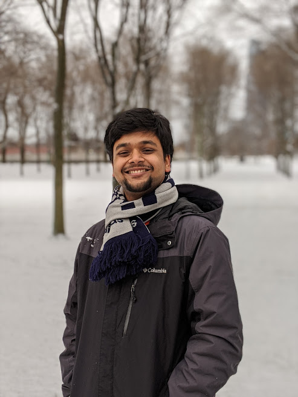
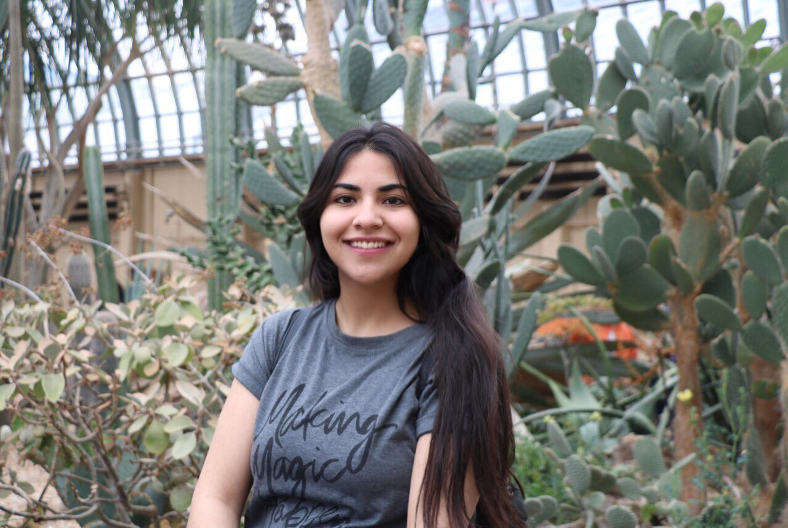
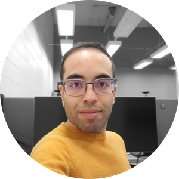
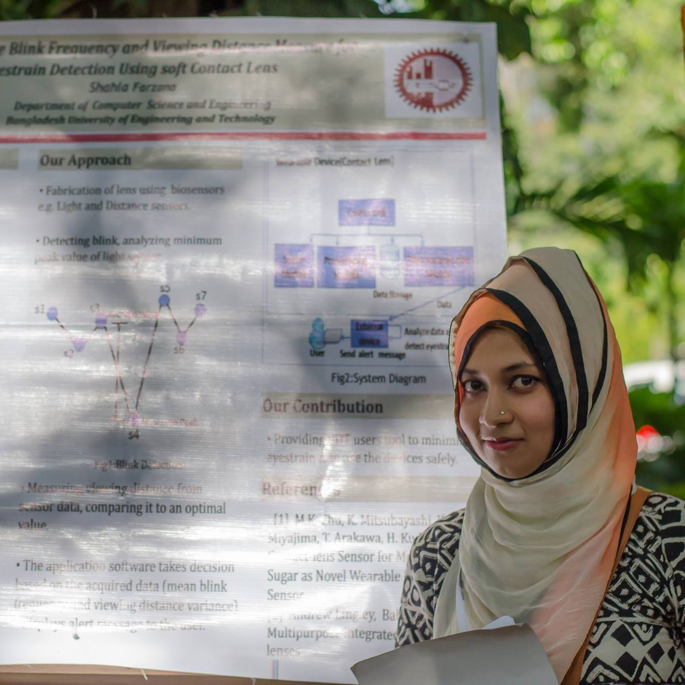

"The future depends on some graduate student who is deeply suspicious of everything I have said." - Geoffrey Hinton
Current Team Members

Ankit Aich
Ankit Aich is a doctoral student who joined the Department of Computer Science at the University of Illinois at Chicago in Spring 2020. Prior to this, he was pursuing his PhD at Rochester Institute of Technology, NY. He completed his bachelor's degree in Information Technology in 2018. His interests lie in figurative language and computational social science.
Website:
https://ankitaich09.github.io/resume

Mina Valizadeh
Mina Valizadeh is a doctoral student in the Department of Computer Science at the University of Illinois at Chicago. She received her bachelor's degree in Computer Science from the University of Tehran in 2018. Her research interests are primarily in natural language processing, with emphases on dialogue management and self-disclosure detection in online health forums.
Website:
http://mina-valizadeh.mystrikingly.com/

Mohammad Arvan
Mohammad Arvan is a doctoral student in the Department of Computer Science at the University of Illinois at Chicago (UIC). His main research interests are in the areas of machine learning and natural language processing (NLP). Mohammad is particularly focused on reducing the computational costs of neural models in language modeling and sequence transduction tasks.

Shahla Farzana
Shahla Farzana is a doctoral student in the Department of Computer Science at the University of Illinois at Chicago. She received her bachelor's degree in Computer Science and Engineering from Bangladesh University of Engineering and Technology in 2015. Her research interests lie at the intersection of natural language processing, human computer interaction, and interactive interface design.
Alumni
Yatri Modi (Spring 2020)
- M.S. Thesis Topic: Towards an Improved Model for Visual Storytelling
Alberto Bellini (Fall 2019)
- M.S. Thesis Topic: Towards Open-Ended VQA Models using Transformers
Flavio Di Palo (Fall 2019)
- M.S. Thesis Topic: Detecting Dementia from Patients' Conversational Transcripts: A Neural Network Approach
Prospective Team Members
Note (Updated January 2020): All funded RA positions for 2020 have now been filled. If you do not need funding, or if you already have funding from some other source (e.g., TA position, research fellowship, etc.), feel free to read onward! If you do need funding, make sure to check back regularly. If/when additional funded positions become available, I will post the application (and deadline to apply) here.
Graduate
I'm thrilled that you’re interested in working with me! Disclaimers first:
- Although I advise both doctoral and master's students, I generally do not have funding available for M.S. students.
- I receive many emails from prospective students, and unfortunately am not able to respond to them all (if I did, I wouldn't have time to respond to my current students!). I'm not on the admissions committee, so I have very little influence on admissions decisions—emailing me prior to being admitted to UIC won't have an impact on the success of your application. Instead, for information regarding admissions at UIC, I’d recommend checking out the requirements listed here: https://www.cs.uic.edu/graduate-admissions/. You can also contact our CS admissions team at gradapps@cs.uic.edu regarding specific questions not answered on the UIC CS website.
Once you've been admitted, feel free to introduce yourself by sending me an email with the subject, "Reaching out after reading your website!" I'm always searching for creative, self-motivated researchers to join my team, and would be happy to set up a meeting at that time.
Undergraduate
If you are interested in working with me on a volunteer basis or for course credit/a capstone project, feel free to reach out to me via email! I enjoy working with undergrads and have worked with many on past or current research projects. Note that I require a minimum time commitment of 10 hours per week for all undergraduate researchers.
Visiting
At this time I do not have any short-term positions available for non-UIC students. If you are interested in working with me in a more permanent capacity sometime in the future, please apply to UIC directly and send me an email once you’ve been admitted so we can set up a time to chat!